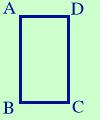

|
In un rettagolo il perimetro e' centimetri 120 e la base e' meta' dell'altezza; determinare l'area  Come prima cosa costruiamo la figura e mettiamo i dati che abbiamo; La relazione mi e' data dal problema, pero' devo scriverla per esteso, quindi invece di perimetro = 120 cm scrivero' AB + BC + CD + DA = 120 So che la base e' meta' dell'altezza, quindi se chiamo la base x: BC = DA = x allora l' altezza sara' AB + CD = 2x Avrei potuto chiamare x l'altezza e 1/2 x la base, ma chi vuole lavorare con le frazioni se e' possibile evitarlo? sostituisco nella relazione 2x + x + 2x + x = 120 6x = 120 x = 120/6 = 20 quindi BC = DA = 20 cm AB = CD = 2x = 40 cm Ora possiamo trovare l'area As = AB _ · CD _ = 20 cm · 40 cm = 800 cm2 |